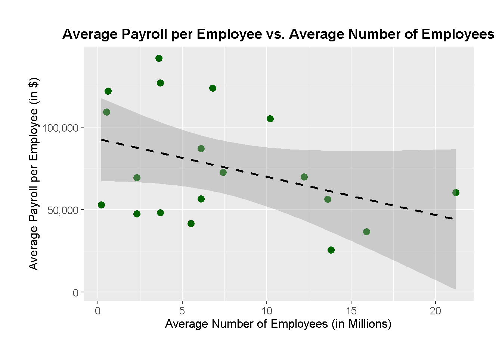

Concerns Regarding the Census Bureau’s Manufacturing Payroll Visualizations
Problem Statement:
The visuals on the U.S. Census Bureau website are flawed since they don’t go far enough into comparing payrolls and employment in manufacturing across different areas or subsectors. Additionally, because of the design’s relative simplicity, it is more difficult to convey subtleties like historical patterns or outside variables’ influence (such as automation or changes in the economy). Beyond a high-level comparison with other industries, the capacity to deliver actionable insights is limited by the visual concentration on a small number of fundamental parameters.
colnames(employees_info)[1] <-"Respective_Sectors"colnames(payroll_info)[1] <-"Respective_Sectors"merging_info <-merge(employees_info, payroll_info, by ="Respective_Sectors")
1. Payroll vs Workers (Linear Regression Scatter Plot):
The average payroll per employee is plotted against the average number of employees, expressed in millions. The trend between these two variables is depicted by the dashed black regression line, which implies that industries with larger workforces do not always pay better. In contrast to industries like healthcare and retail, which have big workforces but relatively low compensation, professional services and company management, for instance, have fewer employees but significantly larger payrolls.
Important characteristics:
The link between payroll and worker size is depicted by the black dashed line, while dark green spots indicate sector data.
When comparing two measures, trends or lack thereof may be graphically shown with the use of linear regression.
ggplot(merging_info, aes(x = Avg_Employees_In_Mlns, y = Avg_Payroll_In_Dollars)) +geom_point(color ='darkgreen', size =3) +geom_smooth(method ="lm", linetype ="dashed", color ="black") +labs(title ="Average Payroll per Employee vs. Average Number of Employees",x ="Average Number of Employees (in Millions)",y ="Average Payroll per Employee (in $)") +scale_y_continuous(labels = scales::comma) +scale_x_continuous(labels = scales::comma) +theme(plot.title =element_text(hjust =0.5, size =14, face ="bold"),axis.title.x =element_text(size =12),axis.title.y =element_text(size =12),axis.text =element_text(size =10),plot.margin =margin(1, 1, 1, 1, "cm"))
`geom_smooth()` using formula = 'y ~ x'

2. Sector-specific Heatmap of Average Workers and Payroll:
The heatmap makes it possible to compare two indicators directly, for all sectors: the average payroll and the average number of workers. Darker hues imply greater values, such as in Information, Finance, and Company Management sectors, which provide larger payrolls. Lighter hues, on the other hand, indicate lower payroll values even for significant staff numbers in Accommodation & Food Services and Retail. The huge differences in labor size and salary between industries are effectively depicted in this graph.
Important characteristics:
The gradient from light blue to dark blue in the heatmap represents the magnitude of the data.
Readability is enhanced with flipped coordinates, or sectors on the Y-axis.
Comparing sectors simultaneously on two important parameters is made simple by a clear structure.
heat_map_information <- merging_info %>%pivot_longer(cols =c("Avg_Employees_In_Mlns", "Avg_Payroll_In_Dollars"),names_to ="Metrics",values_to ="Value")ggplot(heat_map_information, aes(x = Respective_Sectors, y = Metrics, fill = Value)) +geom_tile(color ="white") +scale_fill_gradient(low ="lightblue", high ="darkblue") +coord_flip() +# Flip coordinates for better readabilitylabs(title ="Heatmap of Average Employees and Payroll by Sector",x ="Respective Sectors",y ="Metrics",fill ="Value",caption ="Source: U.S. Census Bureau") +theme_minimal() +theme(axis.text.x =element_text(angle =45, hjust =1),plot.title =element_text(hjust =0.5),panel.grid.major.y =element_blank())